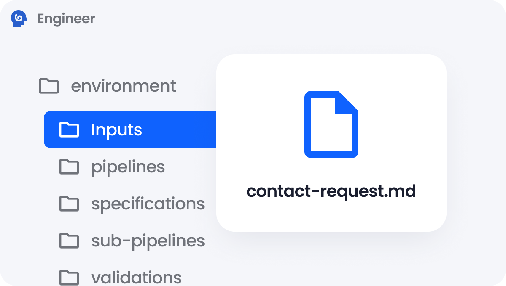

01
Start with the real request
Bring in the business need, institutional context, and constraints. Akaden starts with what your team knows instead of asking a developer to begin from a blank prompt.